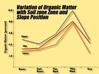
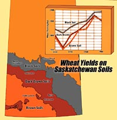
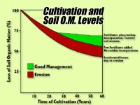

|
|
The natural fertility of Saskatchewan soils is related to the content of soil organic matter (humus): the reservoir of the important plant nutrients.
Humus contains over 95% of the soil nitrogen, 90% of the soil sulphur and 30-50% of the soil phosphorus
as well as many of the micronutrient elements. Without humus the soil would be dead - void of the multitude of
microoganisms that are so important in nutrient cycling and the health of soils.
Our rich grassland soils have developed over ten thousand years since the last glaciation. Until settled by man
(in the late 1800s and early 1900s the soils had reached a dynamic equilibrium with the environment.
Losses of soil due to erosion were met by new soil formation from the parent material.
 Grassland soils that were formed in wetter environments had richer plant growth which translated into more humus in the surface horizons. The more humus, the darker the colour of the soil. This is how the Brown, Dark Brown and Black soil zones were formed and where most of our wheat is grown. The most fertile soils are in the Black soil zone; the least fertile in the drier Brown zone. The more northern agricultural areas of the province have more moisture and cooler temperatures giving shorter growing seasons. The production of organic matter is less and some organic matter can be leached from the top soil to lower horizons. Here the Grey and Grey-Black grassland-forest transitional soils are formed. These soils have lower organic matter than grassland soils and are less fertile. Within any one soil zone, however, the slope position will also affect the soil organic matter content. Lower slope positions receive some of the water run off from the upper slopes and have greater productivity. Lower slope soils thus have the highest organic matter content, followed by mid slope and finally upper slope soils. Modern precision farming methods distribute fertilizer where it is most needed and takes into account the productivity differences over each field.
|
|||
 Yields and Soil Zone The graph shows that the best yields, as expected were found in Black soils. The dip in the chart in 1930 was due to severe dought and soil erosion. Since the 1940's, improved varieties and the increasing use of fertilizers and herbicides were needed to increase yields. In the 1980s, drought again reduced yields. In the first half of this century, grassland soils were farmed without the use of fertilizer using a wheat-wheat-summerfallow rotation. Since most soils were not irrigated, summerfallowing or "bare fallowing" was used to conserve moisture and control weeds. During the summerfallow year, there are few plants to use up the precious moisture contained in deeper parts of the soil profile. There are, however, active microorganisms present which feed off the soil humus and release plant nutrients such as nitrate nitrogen as a by product. This nitrate can be taken up by plants or leached down or out of the soil profile. The crop that is seeded following a summerfallow year can usually grow quite well without the addition of nitrogen fertilizer. But is this a way of mining our soils for plant nutrients? Research has shown the damage that summerfallowing has caused. Not only does it waste valuable nutrients but it also makes the bare soil susceptible to wind and water erosion. Summerfallowing is now mainly practised, in the dry brown and dark brown soils where crop moisture is at a premium.  In some cases, as much as 60 percent of the original soil organic matter has been lost after fifty or so years of cultivation. Some losses are attributed to mineralization but erosion, particularly by wind has done much damage. By carefully managing the soils using practices such as zero till to incorporate crop residue and the careful addition of fertilizers and pesticides, the loss of soil organic matter can be slowed or halted completely. Saskatchewan soils will continue to lose soil organic matter and decline in fertility as long as we do not put back into the soil what we take out of it. |